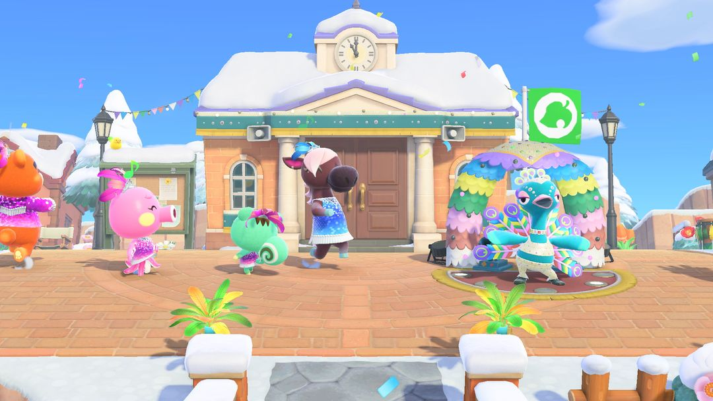
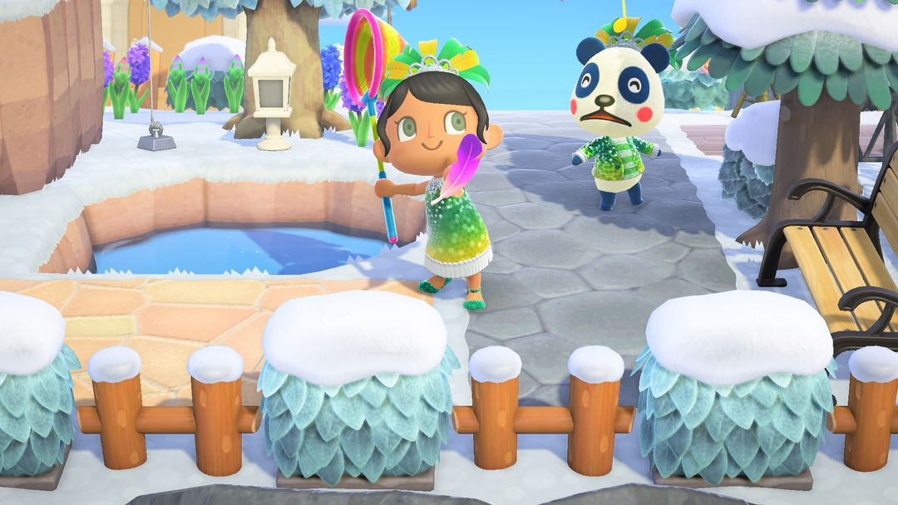
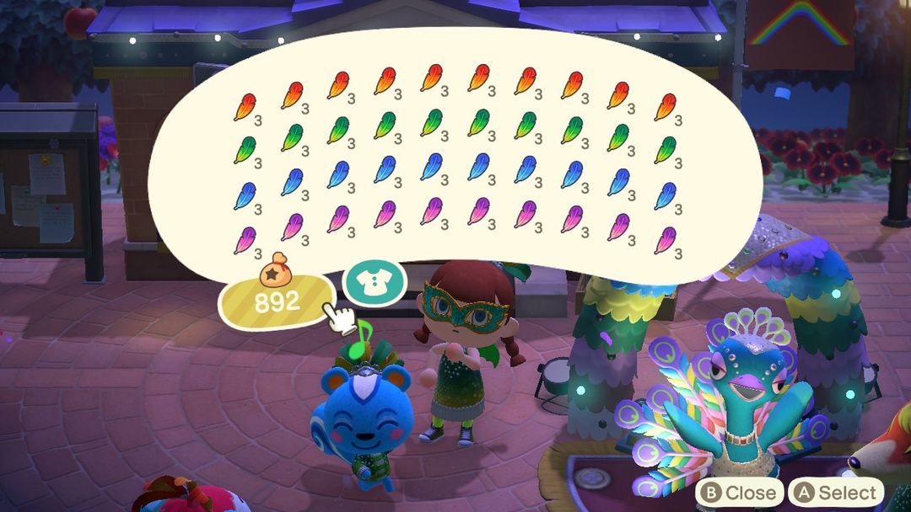
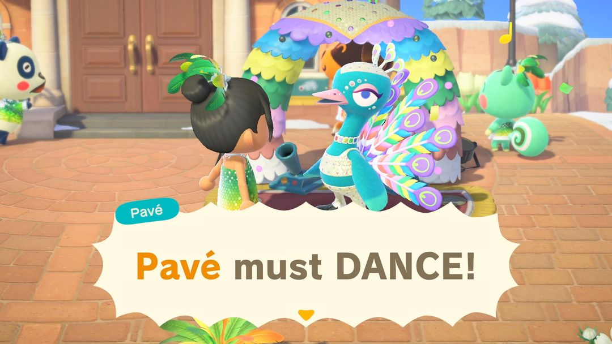

狂欢节：抓羽毛，找阿欢换家具
只有一天，每年落在 2 月或 3 月的某个星期一
狂欢节一年只有一天，落在 2 月或 3 月的某个星期一，南北半球是同一天。这天孔雀舞者阿欢会来广场跳一整天的舞，天上飘下各色羽毛，拿捕虫网抓下来交给他，就能换狂欢节家具；换够次数，还能拿到只有他手里才有的「狂欢节花车」。
当天主要的活就是抓羽毛、交羽毛，事先能准备的不多：2 月 1 日起 Nook商店就摆出了狂欢节家具，ABLE SISTERS 也挂出了狂欢节衣服，想要的可以提前买好，当天专心抓羽毛。出门前记得带上捕虫网。

狂欢节当天的广场：阿欢在服务处门口，岛民换上了羽毛装（图：任天堂，转自 Nookipedia）
01哪一天
狂欢节的日子跟着复活节走：复活节往前数 48 天的那个星期一，也就是现实里「大斋首日」前面的那个周一。复活节每年日期不同，狂欢节也就跟着变，落在 2 月或 3 月。南北半球是同一天。
活动前几天，服务处门口的布告栏会贴出通知。当天从早到晚都能玩，但只有这一天，错过了就得等下一年。具体是哪天，可以翻动森圈圈的活动日历。
02谁来、在哪
主持人是孔雀舞者阿欢，一整天都在广场上（服务处门前）跳舞。岛民们会换上狂欢节服装和连身裙，满岛跟着跳，天上飘着彩色纸片。
天上还会飘下羽毛，有红、蓝、绿、紫四种颜色，偶尔还能碰上彩虹羽毛。拿捕虫网一挥就能抓到。

羽毛从天上飘下来，拿捕虫网抓（图：任天堂，转自 Nookipedia）
03怎么换东西
整个流程就四步：
· 第一步，先去找阿欢说话。他会点名要某一种颜色的羽毛 3 根，同时送你「彩虹羽毛」的DIY手册。
· 第二步，满岛抓羽毛。羽毛到处飘，同色的一格最多叠 3 根；彩虹羽毛不叠，一根就占一格。
· 第三步，回去交羽毛。同色 3 根，或者彩虹羽毛 1 根，都能换一件狂欢节家具。家具的颜色跟着你交的羽毛颜色走，想要哪个颜色就交哪个颜色的羽毛。
· 第四步，换满 9 次以后，阿欢会改要 3 根彩虹羽毛，交给他就能拿到「狂欢节花车」。之后又回到前面，9 次换家具、3 根彩虹换花车，可以一直循环下去。
彩虹羽毛也能自己做：红、蓝、绿、紫各 1 根，拿到工作台上就能合成。所以四种颜色凑齐一套时，与其等天上掉彩虹的，不如自己动手做一根，留着换花车用。

口袋装满四色羽毛和彩虹羽毛（英文版画面）（图：Nookipedia）
注意口袋里只要揣着彩虹羽毛，阿欢就会先要彩虹的，哪怕你同时带着 3 根同色也一样。想交同色羽毛换指定颜色的家具时，先把彩虹羽毛放进收纳。
04能拿到什么
狂欢节家具在阿欢那里是随机给的，也可以在 Nook商店买（2 月 1 日起上架）。下面是商店的价钱，最后一件花车商店不卖：
| 东西 | Nook商店价（铃钱） |
| 狂欢节舞台 | 6,000 |
| 狂欢节撒纸片机 | 5,000 |
| 狂欢节气球灯 | 4,000 |
| 狂欢节挂饰 | 4,000 |
| 狂欢节小吃摊 | 3,000 |
| 狂欢节阳伞 | 2,500 |
| 狂欢节打击乐器 | 2,100 |
| 狂欢节灯 | 1,500 |
| 狂欢节旗子 | 1,300 |
| 狂欢节花车 | 只有阿欢给 |
阿欢给家具是随机的，想要的某一件一直抽不到，直接去商店买会更省心；要是想要特定颜色，就靠交对应颜色的羽毛去换。
衣服在 ABLE SISTERS 买：狂欢节服装、狂欢节连身裙各 2,600 铃钱，狂欢节发饰 2,240 铃钱。Nook商店还卖「欢乐！狂欢节反应」，学会以后能多 4 个反应：跟着节奏、炒热气氛、欢乐！、撒纸片。
05抓羽毛的几个小技巧
用耳朵找。羽毛飘在画面外时，会有呼呼的哨声，离得越近越响。戴上耳机还能听出是在左边还是右边。
别跑远，也别进屋。跑得太远，或者进了建筑再出来，附近的羽毛可能就没了。网子挥空倒没关系，羽毛不会因为没抓到就消失，再挥一下就行。
缺哪种颜色就找岛民换。岛民会主动凑过来搭话，拿 1 到 3 根羽毛跟你换颜色，手里某个颜色多出来、另一个颜色差一根的时候正好用上。
家具提前买好。2 月 1 日到活动前一天，Nook商店都能买狂欢节家具，当天就不用往店里跑，专心抓羽毛。

交完羽毛，阿欢跳一段舞再给东西（英文版画面）（图：任天堂，转自 Nookipedia）
06版本变化
狂欢节是 2021 年 1.7.0 更新加进来的。1.9.0 起，狂欢节打击乐器可以摆到桌子上了。2.0 和 3.0 的更新说明里都没提到狂欢节的玩法有变化。
动森圈圈 · 小程序和 iOS App 都搜「动森圈圈」